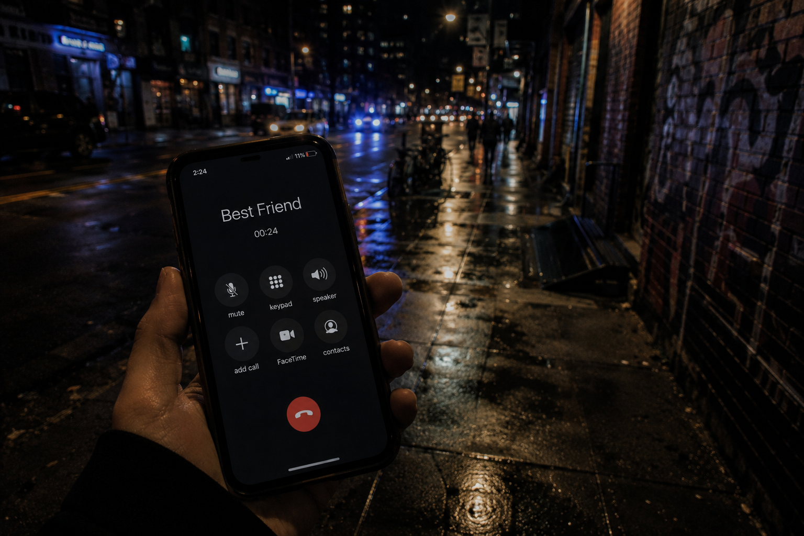

You stare at your friend's contact for a few seconds before finally pressing call.
The ringing feels louder than the city.
One ring.
Two.
You almost hang up out of embarrassment.
Then:
“HELLO?”
The concern in their voice hits immediately. Not annoyed. Not sleepy. Just awake in the way people get when they realize something might actually be wrong.
You start walking while you talk.
“I’m fine,” you say automatically.
“You called me at 2:54 in the morning. You are statistically not fine.”
You laugh harder than the joke deserved.
The sound of another human being in your ear makes the streets feel slightly less enormous.
A car passes too slowly beside you.
Your friend notices the silence immediately.
“Hey. Stay with me.”
You check your battery again.
3%.
“Okay,” they say. “What’s the safest option right now?”